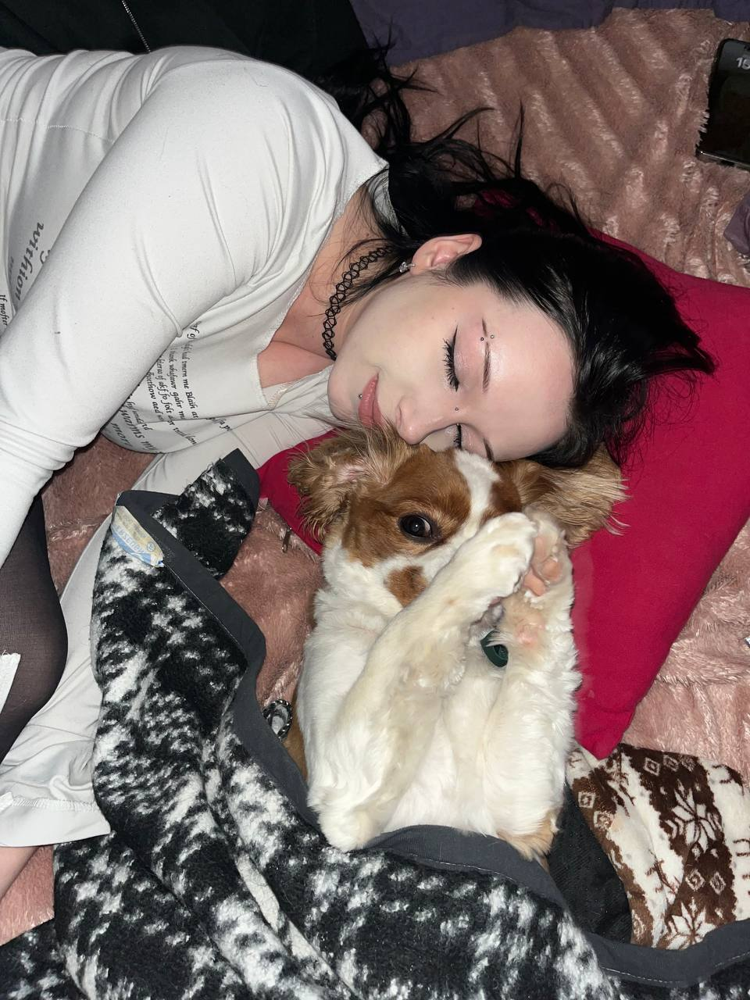
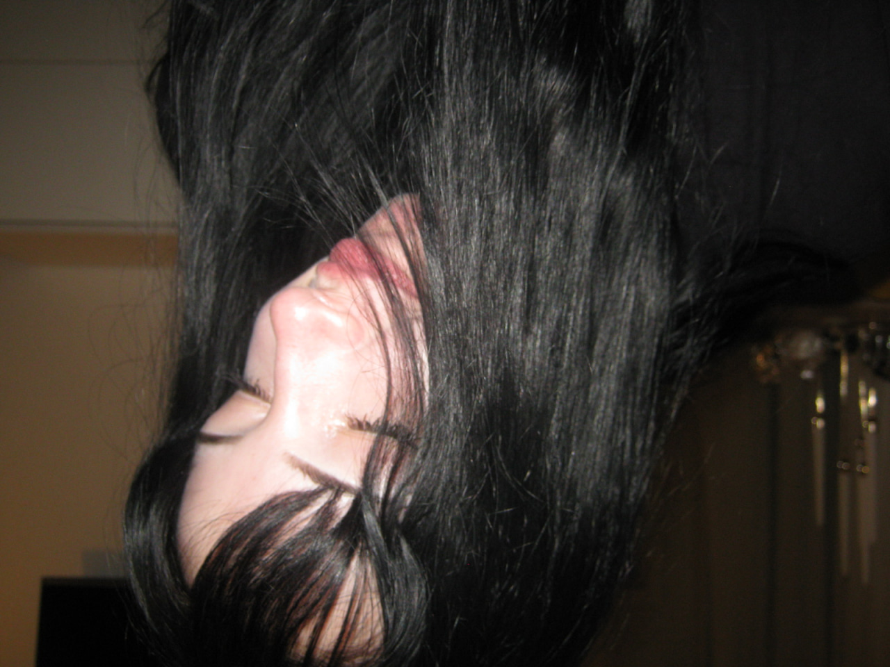
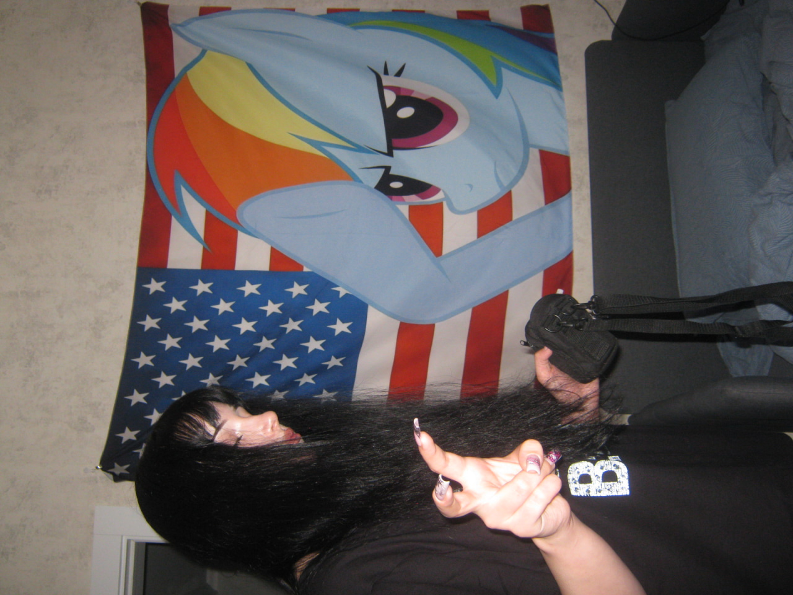

🎧Искренние
тексты
Каждая песня передаёт настоящие эмоции и переживания.

SAMARA
Начинающий исполнитель
Первая песня • Repeat • 2026
О маше
SAMARA - творческий человек, который давно увлекается музыкой и постепенно превращает своё увлечение в нечто большее. Она занимается вокалом и регулярно выступает на концертах в студии YUKIE STAR, где продолжает развивать свои навыки и получать сценический опыт. Псевдоним SAMARA появился совершенно неожиданно - после просмотра фильма, в котором был персонаж с таким именем. Оно запомнилось своей загадочностью и атмосферой, поэтому со временем стало частью её творческого образа. В жизни Маша весёлая, открытая и немного загадочная. Она любит необычный стиль в одежде, искать вдохновение в самых разных вещах и предлагать идеи для своих песен. Сейчас она работает над следующей целью - накопить средства на выпуск своей второй композиции и продолжить развивать свой музыкальный проект.
Почему стоит слушать?
🎶Атмосферное
звучание
Музыка создаёт настроение, которое хочется переслушивать.
💜Авторская
музыка
Каждая работа создаётся с вниманием к деталям и собственной атмосферой.
Последние фото



Музыка начинается там, где заканчиваются обычные слова.